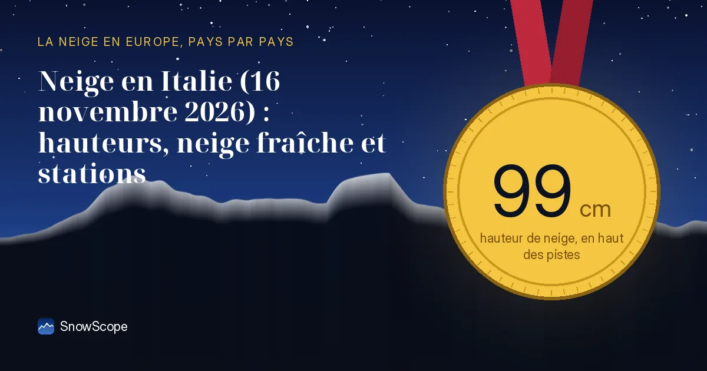

Neige en Italie (16 novembre 2026) : hauteurs, neige fraîche et stations
La surface blanche en Italie atteint environ 21 210 km² aujourd'hui, peu de changement depuis hier. Environ 23 % des montagnes et collines cartographiées du pays sont couvertes.
Consultez les prévisions neige en temps réel pour Monterosa Ski sur l'application SnowScopeHauteurs de neige, alertes poudreuse et carte 3D, gratuitement.
Couverture neigeuse aujourd'hui
Pour un paysage blanc, visez 1 700 m et plus haut. Il y a une semaine, c'était 22 490 km² : 1 280 km² ont fondu depuis.
| Station | Aujourd'hui | Normale à cette date | Part de la normale |
|---|---|---|---|
| Monterosa Ski | 18 cm | 13 cm | 138 % |
| Valtournenche | 15 cm | 15 cm | 100 % |
| Macugnaga | 37 cm | 12 cm | 308 % |
| La Thuile ski | 26 cm | 23 cm | 113 % |
| Schöneben | 10 cm | 18 cm | 56 % |

Hauteur de neige selon l'altitude
Selon l'altitude, le tableau est le suivant : entre 1 000 et 1 500 m, moins de 1 cm en moyenne, 11 % couverts; entre 1 500 et 2 000 m, 1 cm en moyenne, 56 % couverts; entre 2 000 et 2 500 m, 5 cm en moyenne, 89 % couverts; au-dessus de 2 500 m : en moyenne 17 cm (99 % blanc).

Ce que cela donne sur les pistes
La neige fraîche sur la sous-couche promet des virages souples en haut, tandis que le bas reste irrégulier.
Surveillez les prévisions : la neige à venir peut vite changer la donne.
Où est tombée la neige fraîche
Sur 72 heures, le plus de neige fraîche, jusqu'à 16 cm, est tombé sur the Aosta Valley, the Piedmont Alps et les Apennins centraux.
Les dernières 24 heures ont apporté jusqu'à 9 cm.
Environ 5 800 km² ont reçu au moins 5 cm.
Ce qui arrive
De la neige est prévue : jusqu'à 50 cm d'ici trois jours, jusqu'à 75 cm en sept jours.
Le mardi 17 novembre se détache, avec jusqu'à 25 cm en une journée.
La deuxième semaine ajoute jusqu'à 32 cm là où il neige le plus.
La sélection pour le week-end
Monterosa Ski est en tête avec 99 cm sur le haut du domaine.
Ensuite : Valtournenche (80 cm), Macugnaga (69 cm), La Thuile ski (64 cm) et Schöneben (58 cm).
Monterosa Ski a reçu 8 cm en trois jours et pourrait gagner 31 cm d'ici jeudi 19 novembre.
Valtournenche a reçu 10 cm en trois jours et pourrait gagner 39 cm d'ici jeudi 19 novembre.
On compte 123 stations blanches sur 237 en Italie aujourd'hui.
Conseils aux skieurs
- Après une nuit claire, la neige est dure le matin : attendez le soleil sur les faces sud.
- Au-dessus de la forêt, la neige peut être ventée : attention aux crêtes.
- Lisez le bulletin d'avalanche local avant le hors-piste.
À propos de ces chiffres
Les hauteurs de neige des stations sont la neige la plus épaisse sur le haut du domaine à la date indiquée ; ce sont des estimations pour une zone, pas une mesure en un point. Les prévisions peuvent changer. Consultez toujours le bulletin d'avalanche officiel avant le hors-piste.
Citer ce bulletin
Pour la recherche, l'enseignement ou la presse : chiffres et graphiques réutilisables librement sous CC BY 4.0 avec cette citation.
SnowScope (2026), Neige en Italie (16 novembre 2026) : hauteurs, neige fraîche et stations, https://snowscope.app/blog/fr/2026/11/italy-snow-report-16-november-2026.html, consulté le 2026-11-16
SnowScope (Atlas Labs). (2026, November 16). Neige en Italie (16 novembre 2026) : hauteurs, neige fraîche et stations. SnowScope snow reports. https://snowscope.app/blog/fr/2026/11/italy-snow-report-16-november-2026.html
BibTeX
@misc{snowscope2026italysnowreport16novembe,
author = {{SnowScope (Atlas Labs)}},
title = {Neige en Italie (16 novembre 2026) : hauteurs, neige fraîche et stations},
year = {2026},
month = nov,
howpublished = {\url{https://snowscope.app/blog/fr/2026/11/italy-snow-report-16-november-2026.html}},
note = {Published 2026-11-16 20:42 UTC; accessed 2026-11-16}
}· CC BY 4.0 · Méthodes, données et outils →
Monterosa Ski : neige et température selon l'altitude, cet hiver vs l'hiver dernier (outils) →
Suivre Monterosa Ski
Gratuit : un message quand la neige arrive, et la météo chaque matin.